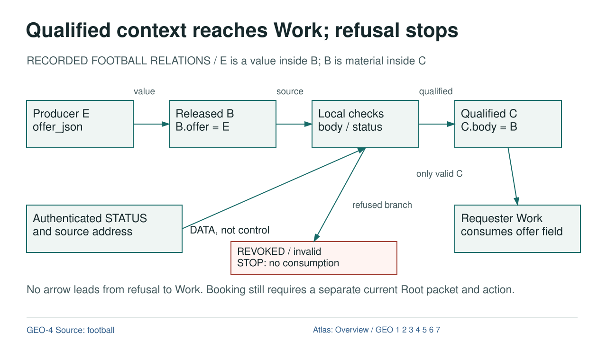

Qualified context reaches Work; refusal stops

Diagram text equivalent
- Qualified context reaches Work; refusal stops
- RECORDED FOOTBALL RELATIONS / E is a value inside B; B is material inside C
- E: Producer E offer_json
- Producer E offer_json
- B: Released B B.offer = E
- Released B B.offer = E
- CURRENTNESS: Local checks body / status
- Local checks body / status
- C: Qualified C C.body = B
- Qualified C C.body = B
- DATA: value
- value
- DATA: source
- source
- DATA: qualified
- qualified
- STATUS: Authenticated STATUS and source address
- Authenticated STATUS and source address
- Status data to local checks
- DATA, not control
- CURRENTNESS: REVOKED / invalid STOP: no consumption
- REVOKED / invalid STOP: no consumption
- DATA: refused branch
- refused branch
- WORK: Requester Work consumes offer field
- Requester Work consumes offer field
- DATA: only valid C
- only valid C
- No arrow leads from refusal to Work. Booking still requires a separate current Root packet and action.
- rule
- GEO-4 Source: football
- Atlas: Overview / GEO 1 2 3 4 5 6 7
RECORDED FOOTBALL RELATIONS / E is a value inside B; B is material inside C
Text Equivalent
Qualified context reaches Work; refusal stops
RECORDED FOOTBALL RELATIONS / E is a value inside B; B is material inside C
Producer E offer_json
Released B B.offer = E
Local checks body / status
Qualified C C.body = B
value
source
qualified
Authenticated STATUS and source address
DATA, not control
REVOKED / invalid STOP: no consumption
refused branch
Requester Work consumes offer field
only valid C
No arrow leads from refusal to Work. Booking still requires a separate current Root packet and action.
GEO-4 Source: football
Atlas: Overview / GEO 1 2 3 4 5 6 7
Exact Relations
- E to B: DATA, value.
- B to CURRENTNESS: DATA, source.
- CURRENTNESS to C: DATA, qualified.
- CURRENTNESS to CURRENTNESS: DATA, refused branch.
- C to WORK: DATA, only valid C.